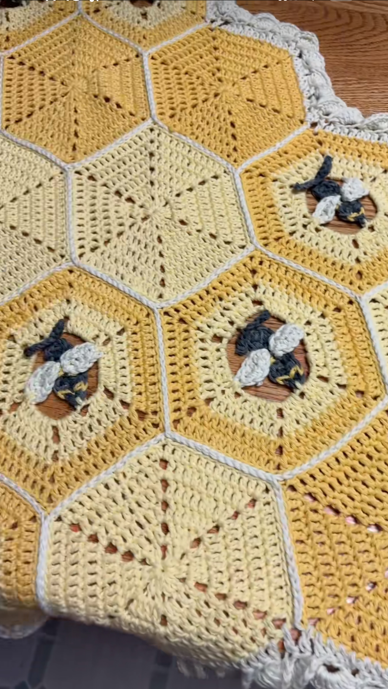
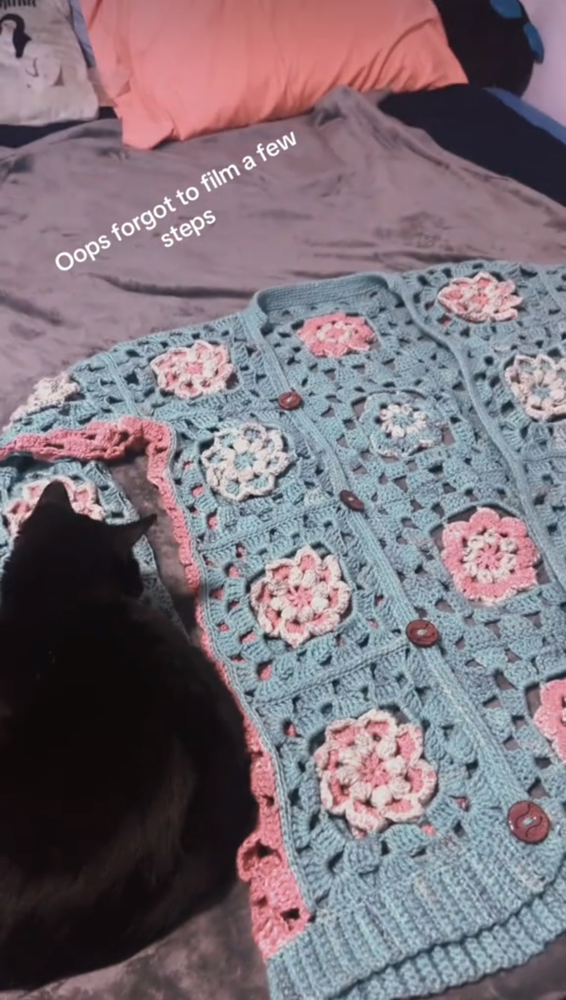
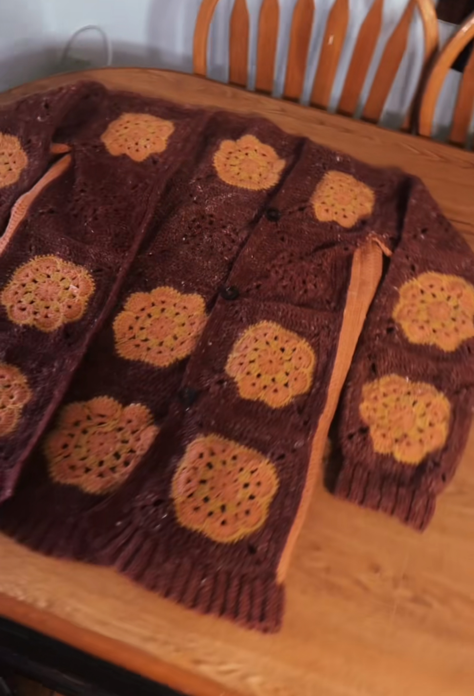
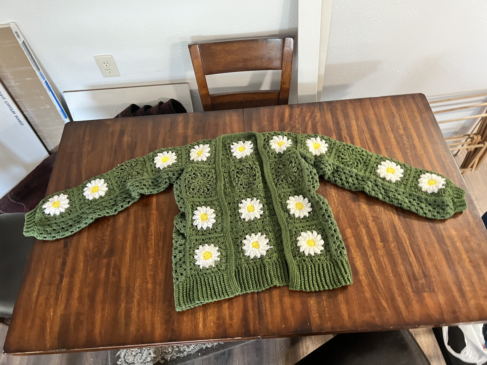

The trees seem endless. They are felled,
from the earliest hours of dawn until far past dusk.
Great pillars of life with intricate patterns of dark bark,
bark that once told stories of a grand life.
Those lives and stories are cut short by the man.
Her voice rings clearly through the melodic thud of the axe.
“You are insatiable!” Gaia claims.
The man wipes a layer of salt and cellulose from his brow,
The axe continues its perpetual task.
“I gave you flatlands,
lands to be graced by Demeter’s bountiful blessings,
through tedious tending and tilling
she gives life to me, to give to all of you.
And by Hestia’s heart,
her embrace, a privilege,
so warm, to stave your weary,
may you always have hearth and home.”
A crash and thud send a dove and a deer fleeing
more is lost than an asp felled by the man.
“I gave you rivers and seas to quench your thirst.
A grateful man would leave this part of me,
for Pan to wander and wonder,
pillage, party, and plunder.
Free to follow his whims of wildness.
Acres of me should be left to Artemis,
room to draw her bow with ease,
giving and taking life,
with her never waning, lunar aim.”
Man is not grateful he thinks next to the thundering crash,“You could be happy elsewhere.”
I am happy elsewhere; this will not be my home.
“You could leave some of me for your child's children,
you could have peace.”
Stepping over a winding creek
that wildlife left desolate days ago,
a grim omen of imminent death,
the man moves onto a hearty pomegranate.
His shadow cast on the forest floor stretches far past his felled conquests,
yet is dwarfed by the trees and life still standing.
We are not grateful.The man swings.
We are not at peace. The man swings.
His heavy, yet sharp, hand connects,
sending a storm of splinters.
Are we happy?



